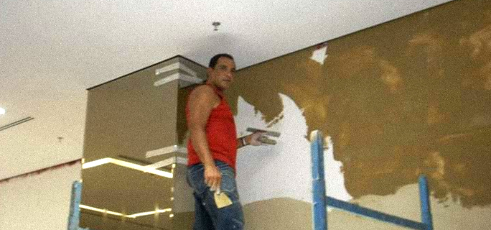

Zeca, o terceiro trivalista
Triagnóstigo
Zeca sempre gostou de fazer parte de grupos, se destacando por sua energia, prespicácia e iniciativa atômica diante dos seus companheiros, e até mesmo de seus adversários, utilizando de cantigas e interações robustas e intrigantes, Zeca sempre cativou os tristonhos e apavorou os corruptos com um volumoso destaque e recebeu a atenção necessária para ser seguido e idolatrado.

Fonte: Facebook Original do Zeca [imagem editada]
Experiência Profissional
Zeca viveu muita coisa nessa vida, sendo um homem de muito peso, já atuou como Pintor, Marceneiro, Mecanico, Letreiro, Ciclista, Pastor, Cantor Profissional, DJ Profissional, Compositor vocal, Desenhista, Artista, Motorista de Aplicativo, Empilhadeirista, Cozinheiro, Metalurgico, Jogador de Futebol Titular pelo União Barbarense, Protetor, Marido, Namorado e Amante, e Atualmente é Diretor Internacional do Trivale, tendo alcançado um recorde mundial e aparecido na TV diversas vezes, foi também entrevistado ao vivo e é atualmente Caminhoneiro Carreteiro.
Fonte: Facebook Original do Zeca [imagem editada]
Carater
Porém, com grandes poderes, vem grandes responsabilidades, Zeca teve uma infância dificil e lutou muito para chegar onde chegou, como qualquer heroi de HQ's, Zeca aprendeu do pior jeito que nada bate tão duro quanto a vida, superando assim todos os desafios que uma vida humilde o propôs, sempre encorajando todos ao seu redor para que fiquem mais forte e deixem de frescura.
Fonte: Facebook Original do Zeca [imagem editada]
Missão
Zeca vê um futuro de justiça e igualdade, onde os maldosos serão julgados e os bondosos ovacionados! e assim segue seu lema de ser melhor enquanto mantém um pé pesado, solido e fixo no chão se equilibrando e sempre almejando novos horizontes!

Fonte: Facebook Original do Zeca [imagem editada]
Pra finalizar, alguns ditados que Zeca espalha pelo mundo:
"Pra ficar do meu lado tem que ser melhor que minha própria companhia.."
"Leões sempre são maus se você só escuta a versão das hienas"
"Gosto de dar corda para ver até onde a pessoa acha que consegue me enganar..."
"Se ninguém te detesta, se ninguem te odeia, se você não irrita ninguém, tem algo errado com você"
"Erros são compreensíveis, deslealdade não."
"Seja forte, mas tenha ternura"
"A tolerância é um crime quando o que se tolera é a maldade"
"Se eu peguei pesado com você, é porque você tem potencial para ser melhor do que eu."
By: Zeca
Continue lendo >
Capitulo 2
Origem do Trivale